中国共产党中央委员会总书记，是中国共产党最高领导人的正式称呼之一。
中国共产党最高领导人的正式称呼，历史上有过几次改变。
一大为中央局书记。
二大、三大为中央执行委员会委员长。
四大为中央执行委员会总书记。
五大、六大为中央委员会总书记（也有说六大为中央委员会主席）。
从1943年3月20日（七大）到1982年（十二大）为中央委员会主席。
十二大以来为中央委员会总书记。全称为中国共产党中央委员会总书记，简称中共中央总书记，较少称“中国共产党总书记”或“中共总书记”。
八大时期（1956年--1966年）和1980年2月十一届五中全会到1982年9月十二大也有总书记，但主要负责书记处的工作，并不是党的最高领导人。
从1949年中华人民共和国成立起，在中国的政治体制之下，中国共产党最高领导人就是中华人民共和国最高领导人。邓小平曾担任过总书记，但他当时并不是最高领导人。其间，最高领导人为中共中央主席毛泽东。
| 届 | time | 机构 | 职务 | 姓名 | 备注 |
|---|---|---|---|---|---|
| 1大 | 1921年7月23 | 中央局 | 书记 | 陈独秀 | 张国焘为组织主任，李达任宣传主任 |
| 2大 | 1922年7月16 | 中央执行委员会 | 委员长 | 陈独秀 | |
| 3大 | 1923年6月12 | 中央执行委员会 | 委员长 | 陈独秀 | |
| 4大 | 1925年1月11 | 中央执行委员会 | 总书记 | 陈独秀 | |
| 5大 | 1927年5月9 | 中央委员会 | 总书记 | 陈独秀 | |
| 6大 | 1928年7月19 | 中央委员会 | 总书记 | 向忠发 | 一说为政治局主席兼中央常委主席 |
| 7大 | 1945年6月19 | 中央委员会 | 主席 | 毛泽东 | |
| 8大 | 1956年9月28 | 中央委员会 | 主席 | 毛泽东 | |
| 9大 | 1969年4月28 | 中央委员会 | 主席 | 毛泽东 | |
| 10大 | 1973年8月30 | 中央委员会 | 主席 | 毛泽东 | 1973年8月30－1976年9月9 |
| 华国锋 | 1976年10月7－1977年8月18 | ||||
| 11大 | 1977年8月19 | 中央委员会 | 主席 | 华国锋 | 1977年8月19－1981年6月28 |
| 胡耀邦 | 1981年6月29－1982年9月11 | ||||
| 12大 | 1982年9月12 | 中央委员会 | 总书记 | 胡耀邦 | 1982年9月12－1987年1月15 |
| 赵紫阳 | 1987年1月16－1987年11月1日代理 | ||||
| 13大 | 1987年11月2 | 中央委员会 | 总书记 | 赵紫阳 | 1987年11月2－1989年6月23日，实际上-5月19 |
| 江泽民 | 1989年6月24－1992年10月18 | ||||
| 14大 | 1992年10月19 | 中央委员会 | 总书记 | 江泽民 | |
| 15大 | 1997年9月19 | 中央委员会 | 总书记 | 江泽民 | |
| 16大 | 2002年11月14 | 中央委员会 | 总书记 | 胡锦涛 | |
| 17大 | 2007年10月22 | 中央委员会 | 总书记 | 胡锦涛 | |
| 18大 | 2012年11月14 | 中央委员会 | 总书记 | 习近平 | |
| 19大 | 2017年10月24 | 中央委员会 | 总书记 | 习近平 | |
| 20大 | 2022年10月22 | 中央委员会 | 总书记 | 习近平 |
① 1921年7月23日至8月初中国共产党第一次全国代表大会在上海法租界望志路106号（现兴业路76号）和浙江嘉兴召开。选举陈独秀为中央局书记。
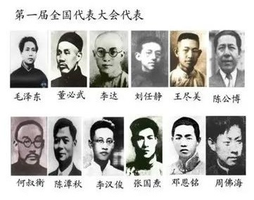② 1922年7月16日至23日，中国共产党第二次全国代表大会在上海南成都路辅德里625号召开。出席会议的代表共12名（有一名代表姓名不详），代表全国195名党员。 选举陈独秀为中央执行委员会委员长。
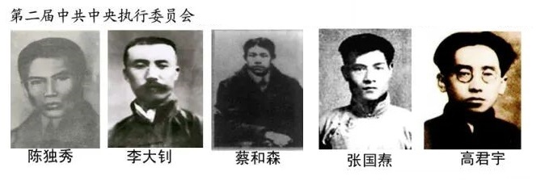③ 1923年6月12日至20日，中国共产党第三次全国代表大会在广州东山恤孤院31号（现恤孤院路3号）召开。 选举陈独秀为中央执行委员会委员长。
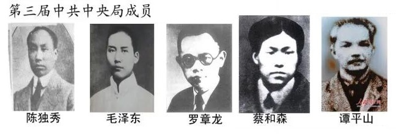④ 1925年1月11日至22日，中国共产党第四次全国代表大会在上海召开，中国共产党第四届中央执行委员会第一次会议选举陈独秀为中国共产党中央执行委员会总书记兼中央组织部主任，彭述之为中央宣传部主任，张国焘为中央工农部主任，蔡和森、瞿秋白为中央宣传部委员，以上5人组成中央局。
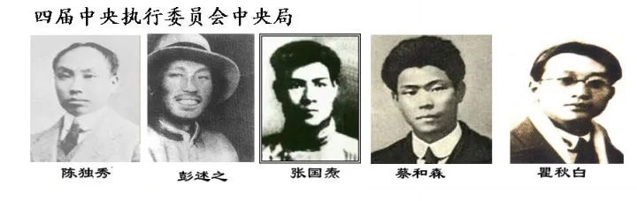⑤ 1927年5月9日，中国共产党第五次全国代表大会在武汉（汉口）举行，选举陈独秀为中央总书记。
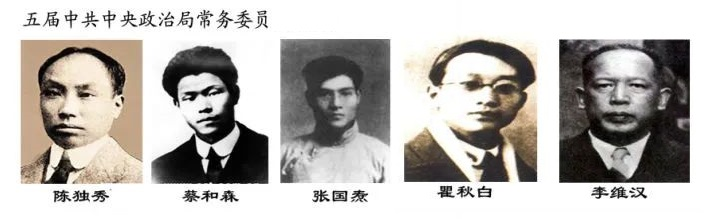⑥ 1928年7月19日在苏联莫斯科克里姆林宫举行中国共产党第六届中央委员会第一次全体会议，选举向忠发为中共中央政治局主席兼中央常委主席。
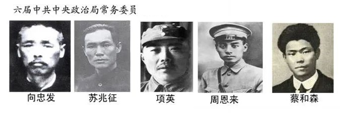⑦ 1945年6月19日中共第七次全国代表大会选举产生中共第七届中央委员会，选举毛泽东为中央委员会、中央政治局主席。
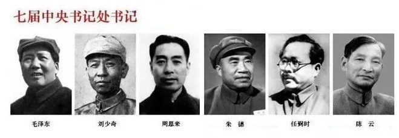⑧ 1956年9月28日中共第八次全国代表大会选举产生中共第八届中央委员会。选举毛泽东为中央委员会主席，邓小平为总书记（主要负责书记处的工作，并不是党的最高领导人）。
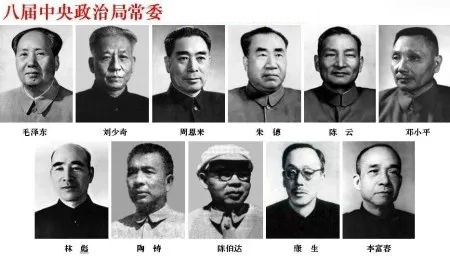⑨ 1969年4月28日中共第九次全国代表大会选举产生中共第九届中央委员会，选举毛泽东为中央委员会主席。
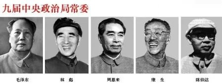⑩ 1973年8月30日中共第十次全国代表大会选举产生中共第十届中央委员会。
选举毛泽东为中央委员会主席（1973年8月中共十届一中全会选举产生。1976年9月9日逝世。）
1976年10月7日中央政治局决定华国锋为中央委员会主席。1977年7月中共十届三中全会追认。）
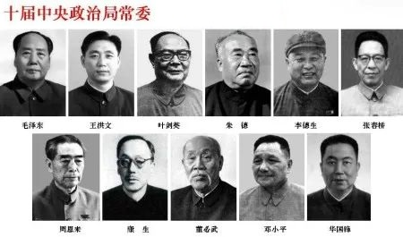十一 1977年8月中共十一届一中全会选举华国锋为中央委员会主席。1981年6月中共十一届六中全会同意华国锋辞去党中央主席和中央军委主席职务的请求）
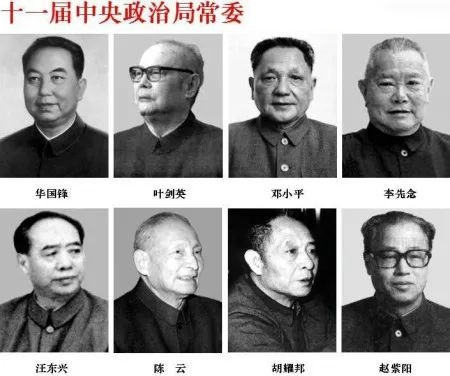十二 1982年9月12日中共第十二次全国代表大会选举产生中共第十二届中央委员会，选举胡耀邦为中央委员会总书记（1987年1月十二届七中全会辞职），邓小平为中央军事委员会主席。
第十二届中央政治局党委↓
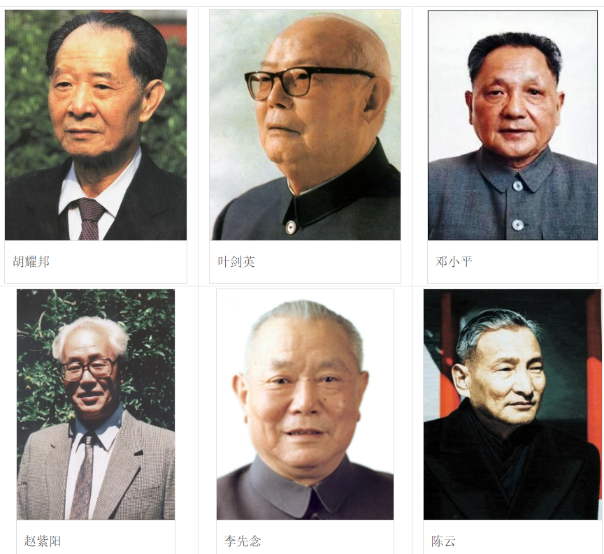十三 1987年11月2日在北京举行中国共产党第十三届中央委员会第一次全体会议，选举赵紫阳为中央委员会总书记（1987年11月—1989年6月），邓小平为中央军事委员会主席，1989年11月十三届五中全会选举江泽民中共中央总书记、中央军委主席。
第十三届中央政治局党委↓
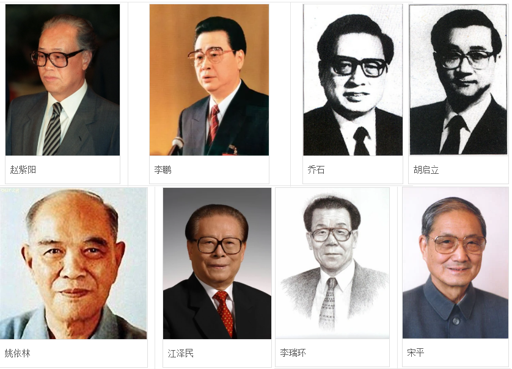十四 1992年10月19日中共第十四次全国代表大会选举产生中共第十四届中央委员会，选举江泽民中共中央总书记、中央军委主席，1993年3月27日选举为国家主席。
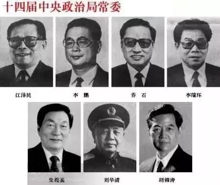十五 1997年9月19日中共第十五次全国代表大会选举产生中共第十五届中央委员选举江泽民为中共中央总书记、中央军委主席，国家主席。
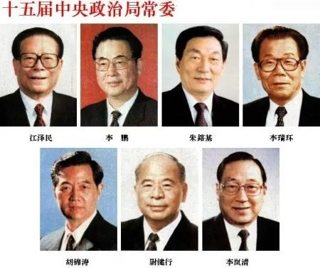十六 2002年11月14日中共第十六次全国代表大会选举产生中共第十六届中央委员会，选举胡锦涛为中共中央总书记，2003年3月15日选举为国家主席，2004年9月十六届四中全会选举为中央军委主席。
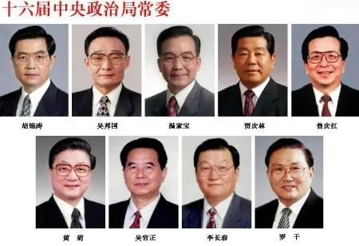十七 2007年10月22日中共第十七次全国代表大会选举产生中共第十七届中央委员会。
十八 2012年11月14日中共第十八次全国代表大会选举产生中共第十八届中央委员会。
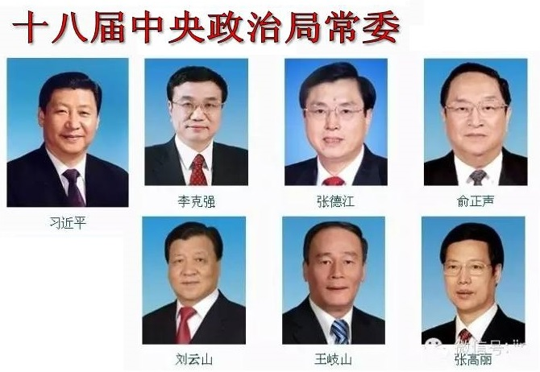十九 2017年10月24日中共第十九次全国代表大会选举产生中共第十九届中央委员会。
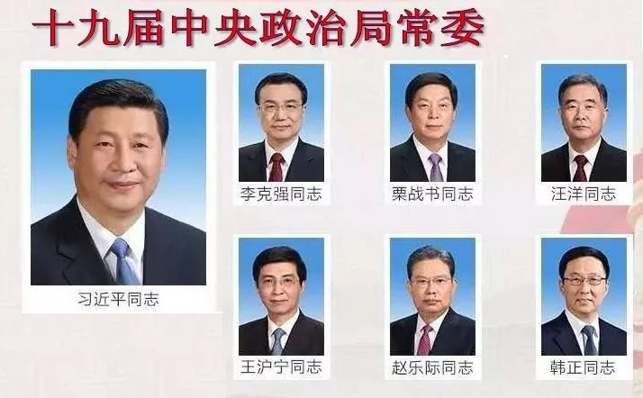二十 2022年10月22日中共第二十次全国代表大会选举产生中共第二十届中央委员会。
中央军委主席，是中央军委的最高职务。
1982年起，中华人民共和国宪法规定国家设立中央军事委员会，至此，形式上存在两个中央军事委员会，即中华人民共和国中央军事委员会和中国共产党中央军事委员会，但是两会的主席（又分别称中共中央军委主席和国家军委主席）和第一副主席除了过渡时期外均为相同的人选。
由于中国社会的特有政治生活背景，中央军委主席一职的人选一般标志着一个统治时代的开始和终结，尽管理论上军委主席只是中国的最高军事统帅，实际上多数为中国的最高领导人或掌握实权的人。
中华人民共和国成立以后，在毛泽东时代，由毛泽东担任军委主席；在邓小平时代，过渡时期由华国锋担任，之后邓小平担任直至1989年，随后就是江泽民时期或称后邓小平时代。
客观上在中国，军事权力在政权完全稳定以后，中共中央主席（总书记）、国家主席和军委主席均由一人兼任。在政权的过渡时期，中共中央总书记、国家主席有时由一个人兼任，军委主席由实权人担任。如邓小平主政后最高职务为军委主席，期间胡耀邦、赵紫阳和江泽民先后担任党的总书记。1993年以后，江泽民集国家主席、党的总书记和军委主席三职于一身，其中1989年6月接替赵紫阳为党的总书记、1989年9月接替邓小平为军委主席、1993年接替杨尚昆为国家主席。
如国家主席、中共中央总书记胡锦涛为中共中央军委主席。在2005年3月的全国人民代表大会上，胡锦涛当选为中华人民共和国国家中央军委主席。
毛泽东（1949年-1976年）
华国锋（1976年-1981年）
邓小平（1981年-1989年11月7日）
江泽民（1989年11月7日-2004年9月19日）
胡锦涛（2004年9月19日）
中华人民共和国主席，是中华人民共和国国家机构的组成部分，是国家机构中的一种。自1954年开始设立。主席和全国人大常委会结合行使国家元首的职权，它对外代表国家。根据中华人民共和国宪法，主席由全国人民代表大会根据宪法第六十二条选举产生，任期五年，最多可连任两届，根据宪法规定：国家主席必须是年满45周岁并有选举权及被选举权的中华人民共和国公民，在实践上则同时中国共产党中央政治局委员以上的高级干部。
宪法第三章第二节界定了主席的职责与义务。主席的主要权力包括，根据全国人大和其常委会的决定公布法律、任免国务院总理和国务院其它组成人员、发布特赦令、宣布进入紧急状态、动员令、授予国家勋章；代表中华人民共和国从事国事活动，接受外国使节、批准或废除与外国缔约等。
按宪法，主席职务仅仅是象征性的国家的元首。如果主席同时任别的职务，其实际权力则来自其他职务，自杨尚昆开始，国家主席一般都兼任中央军委主席或副主席。
根据中华人民共和国宪法规定：如果国家主席出缺，由国家副主席继任；如果正副主席都出缺，则由全国人大常委会委员长代理主席职位至新的国家正副主席人选产生为止。
| 届 | 姓名 | 任期开始 | 任期结束 | 副主席 | |
|---|---|---|---|---|---|
| 中华人民共和国中央人民政府主席（1949-1954） | |||||
| - | 毛泽东 | （1893-1976） | 1949年9月 | 1954年9月 | 朱德、刘少奇、宋庆龄、李济深、张澜、高岗 |
| 中华人民共和国主席（1954-1975） | |||||
| 1 | 毛泽东 | 1954年9月 | 1959年4月 | 朱德 | |
| 2 | 刘少奇 | （1898-1969） | 1959年4月 | 1965年1月 | 宋庆龄、董必武 |
| 3 | 刘少奇 | 1965年1月 | 1966年 | 宋庆龄、董必武 | |
| 中华人民共和国名誉主席 | |||||
| - | 宋庆龄 | （1893-1981） | 1981年5月16 | - | - |
| 中华人民共和国主席（1983至今） | |||||
| 6 | 李先念 | （1909-1992） | 1983年6月 | 1988年4月 | 乌兰夫 |
| 7 | 杨尚昆 | （1907-1998） | 1988年4月 | 1993年3月 | 王震 |
| 8 | 江泽民 | （1926-2022） | 1993年3月 | 1998年3月 | 荣毅仁 |
| 9 | 1998年3月 | 2003年3月 | 胡锦涛 | ||
| 10 | 胡锦涛 | （1942- ） | 2003年3月 | 2008年3月 | 曾庆红 |
| 11 | 2008年3月 | 2013年3月 | 习近平 | ||
| 12 | 习近平 |
（1953- ） |
2013年3月 | 2018年3月 | 李源潮 |
| 13 | 2018年3月 | 2023年3月 | 王岐山 | ||
| 14 | 2023年3月 | 韩正 | |||
中华人民共和国国务院总理为中华人民共和国政府首脑。每届任期为五年，连续任职不得超过两届。总理负责召集和主持国务院常务会议和国务院全体会议，根据宪法对国务院赋予的职权行事。
总理产生程序：国家主席提名，交全国人民代表大会通过，再由国家主席任免。
| 届次 | 姓名 | 任期开始 | 任期结束 | 备注 | |
|---|---|---|---|---|---|
| 1 | 周恩来 | （1898-1976） | 1949年10月1 | 1954年9月27 | |
| 1 | 周恩来 | 1954年9月27 | 1959年4月27 | ||
| 2 | 1959年4月27 | 1965年1月4 | |||
| 3 | 1965年1月4 | 1975年1月17 | |||
| 4 | 1975年1月17 | 1976年1月8 | 在任时逝世 | ||
| 空缺 | 1976年1月8 | 1976年2月2 | 尚未任命接替者 | ||
| 华国锋 | （1921-2008） | 1976年2月2 | 1976年4月7 | 代总理 | |
| 1976年4月7 | 1978年3月5 | 正式任命 | |||
| 5 | 1978年3月5 | 1980年9月10 | 辞去职务 | ||
| 赵紫阳 | （1919-2005） | 1980年9月10 | 1983年6月18 | 任命接替 | |
| 6 | 1983年6月18 | 1987年11月24 | 改任代总书记 | ||
| 李鹏 | （1928-2019） | 1987年11月24 | 1988年4月13 | 代总理 | |
| 7 | 1988年4月13 | 1993年3月31 | |||
| 8 | 1993年3月31 | 1998年3月17 | |||
| 9 | 朱镕基 | （1928-） | 1998年3月17 | 2003年3月16 | |
| 10 | 温家宝 | （1942-） | 2003年3月16 | 2008年3月16 | |
| 11 | 2008年3月16 | 2013年3月15 | |||
| 12 | 李克强 | （1955.7-2023.10 | 2013年3月15 | 2018年3月18 | |
| 13 | 2018年3月18 | 2023年3月11 | |||
| 14 | 李强 | （1959.7-） | 2023年3月11 |
| 届次 | 姓名 | 届次时间 | 备注 | |
|---|---|---|---|---|
| 第一届 | 刘少奇 | 1954年9月 | 1959年4月 | |
| 第二届 | 朱德 | 1959年4月 | 1965年1月 | |
| 第三届 | 1965年1月 | 1975年1月 | ||
| 第四届 | 1975年1月 | 1978年3月 | ||
| 第五届 | 叶剑英 | 1978年3月 | 1983年6月 | |
| 第六届 | 彭真 | 1983年6月 | 1988年4月 | |
| 第七届 | 万里 | 1988年4月 | 1993年3月 | |
| 第八届 | 乔石 | 1993年3月 | 1998年3月 | |
| 第九届 | 李鹏 | 1998年3月 | 2003年3月 | |
| 第十届 | 吴邦国 | 2003年3月 | 2008年3月 | |
| 第十一届 | 2008年3月 | 2013年3月 | ||
| 第十二届 | 张德江 | 2013年3月 | 2018年3月 | |
| 第十三届 | 栗战书 | 2018年3月 | 2023年3月 | |
| 第十四届 | 赵乐际 | 2023年3月 |
| 任次 | 姓名 | 开始 | 结束 | 备注 |
|---|---|---|---|---|
| 第一任 | 周恩来 | 1949 | 1958 | |
| 第二任 | 陈毅 | 1958 | 1972 | |
| 第三任 | 姬鹏飞 | 1972 | 1974 | |
| 第四任 | 乔冠华 | 1974.11 | 1976.12 | |
| 第五任 | 黄华 | 1976.12 | 曾用名王汝梅 | |
| 第六任 | 吴学谦 | 1982.11 | 1988.4 | |
| 第七任 | 钱其琛 | 1988.4 | 1998.3 | |
| 第八任 | 唐家璇 | 1998.3.18 | 2003.3 | |
| 第九任 | 李肇星 | 2003.03.17 | 2007.04.27 | |
| 第十任 | 杨洁篪 | 2007.04.27 | ||
| 第十一任 | 王毅 | 2013.3 | ||
| 第十二任 | 秦刚 | |||
| 第十三任 | 王毅 | |||
ref